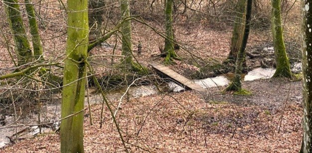

POLITI SØGER AMATØRHJÆLP TIL DRABSSAG: “Vi er så tæt på.”
25 år efter drabet på Louise Steenstrup har Sydøstjyllands politi genåbnet sagen, og som aldrig før trækker de på fritidsdetektiver til at hjælpe.
25 år efter drabet på Louise Steenstrup har Sydøstjyllands politi genåbnet sagen, og som aldrig før trækker de på fritidsdetektiver til at hjælpe.

I dag kl. 10:03
Politiinspektør for Sydøstjyllandsk Politi, Børge Ulriksen har her til morgen erklæret efterforskningen i drabet af 25-årige Louise Steenstrup genåbnet. “Dengang virkede sagen umulig,” udtaler Politidirektøren. “Men rent teknologisk har vi udviklet os nok til, at vi er nødt til at prøve igen. Vi er så tæt på.”
Alligevel er dokumenterne delt med amatørdetektiver for at anskaffe så meget assistance til sagen som muligt. Politidirektøren mener, det er fordi drabsmanden tilsyneladende har afterladt gåder. “Gerningsmanden har tydeligvis taget inspiration af Zodiac-sagen.” siger han.
TV1 har kontaktet Louise’s familie for at høre sagen fra deres side. “Det genåbner også et meget dybt sår,” siger Petrine Steenstrup, Louises’s søster. “Men vi skylder Louise at opklare sagen.”
TV1 spurgte også ind til familiens holdning til Politiets samarbejde med amatørdetektiver, men de valgte ikke at udtale sig.